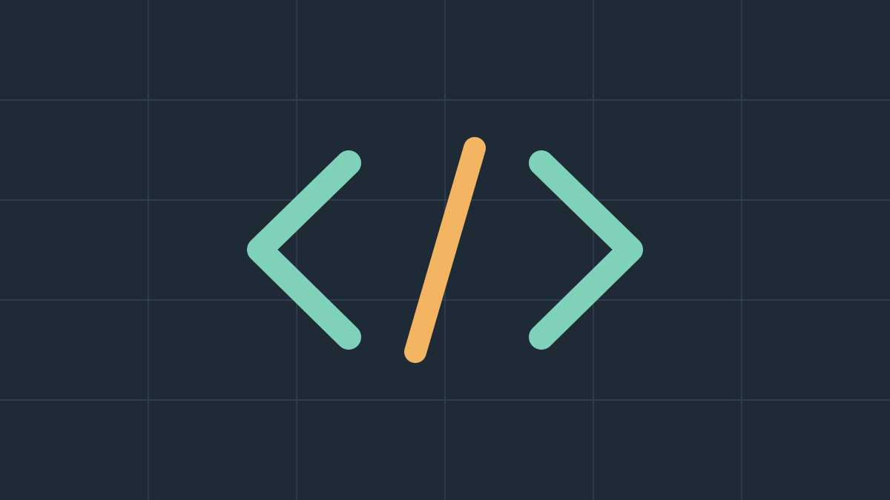

Writing CSS that ages well
Nine habits that keep a stylesheet readable five years and three redesigns later — and the one I had to unlearn.

The first stylesheet I was proud of lasted eleven months. By the second redesign it had become a museum of !important declarations, each one a small fossil of a deadline. This essay is about everything I’ve done differently since.
None of these ideas are new. What’s changed is that modern CSS finally makes them easy: custom properties, cascade layers, :where() and container queries mean the language now rewards restraint instead of punishing it.
1. Start with tokens, not components
Before writing a single selector I define the handful of decisions the whole site will lean on: colours, type scale, spacing and radius. Everything else refers to those names, never to raw values.
:root {
--color-ink: #1c1b19;
--color-paper: #fffaf2;
--color-accent: #c2542f;
--space-s: clamp(.75rem, 1vw + .5rem, 1rem);
--radius: 10px;
}When the brand colour changes — and it will — you edit one line. When dark mode arrives, you redefine the same names inside a media query and nothing else has to know.
2. Keep specificity flat
Specificity is debt. Every ID, every nested selector, every .page .sidebar .card h3 is a loan you’ll repay the day someone needs to override it. I aim for a single class per rule, and wrap anything more complex in :where() so it costs nothing.
/* zero specificity: easy to override later */
:where(.prose) :where(h2, h3) {
margin-block: 2em .5em;
text-wrap: balance;
}3. Name for purpose, not appearance
A class called .blue-box is a promise you can’t keep. Six months later the box is green, and now the name is lying to everyone who reads it. Names like .callout or .price-tag describe a job, and jobs change far less often than colours.
- Describe what it is, not what it looks like.
- Prefer one clear word over a clever abbreviation.
- Use modifiers sparingly:
.callout.is-warningbeats five new components.
4. Trust the cascade
For years I fought the “C” in CSS, scoping every style so tightly that nothing could inherit. It felt safe. It was actually just verbose. Setting sensible defaults on body and letting typography flow down removed a third of my rules.
The cascade isn’t a bug to be contained. It’s the feature that lets a small stylesheet do a lot of work.
Cascade layers make this even calmer: put resets, base styles, components and utilities in declared layers, and the order of your files stops mattering.
@layer reset, base, components, utilities;
@import url("reset.css") layer(reset);
@import url("components.css") layer(components);5. Delete with confidence
A stylesheet ages well when removing code is boring. Co-locate styles with the markup they belong to, keep one component per file, and add a comment at the top of anything that’s safe to delete when its feature goes away.
The other four habits — logical properties, fluid type, container queries and a humble utility layer — deserve their own essay. That’s coming next month. Until then: write less, name honestly, and let the cascade carry the weight.
— Iris